GIServer 文档
发布地图服务
作者: 吴泳锋
- GIServer采用目录式的服务管理方式，地图服务的数据、样式、配置都可以配置在一起，
这样也方便服务的迁移和更新。在配置工具中，很重要的一个内容就是设置系统地图服务目录，
GIServer会扫描这个目录及其子目录下所有的地图服务，如图：
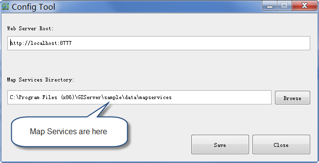
- 准备一个地图服务目录
- 首先，在系统地图服务目录中新建一个子文件夹作为一个地图服务的根目录， 如下新建了一个名为“sample”的子目录，并在这个子目录下新建了一个名为“world”地图服务文件夹， 这在GIServer中将会成为一个名为“sample:world”的地图服务：
- 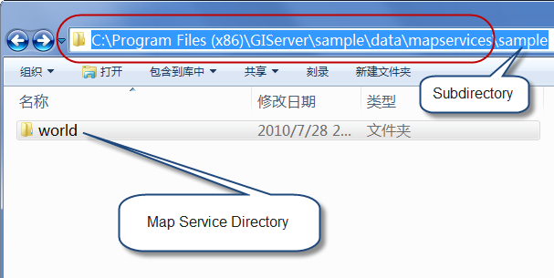
- 准备文件数据和样式文件
- 如果使用文件型的数据，可以将数据复制到地图服务目录下；另外，地图图层的样式是通过SLD文件来描述的， 因此，还需要准备图层的样式文件。比如这里在上面的“world”文件夹中新建了一个“data”目录存放Shapefile文件； 同时新建了一个“sld”目录存放SLD样式文件。
- （关于SLD: http://www.opengeospatial.org/standards/sld）
- 建议使用uDig来对图层进行样式化，然后将样式导出为一个SLD文件。 uDig是免费的，可以从这里下载：http://udig.refractions.net/。
- 下面是用uDig定义了“world”中两个图层的样式：
- 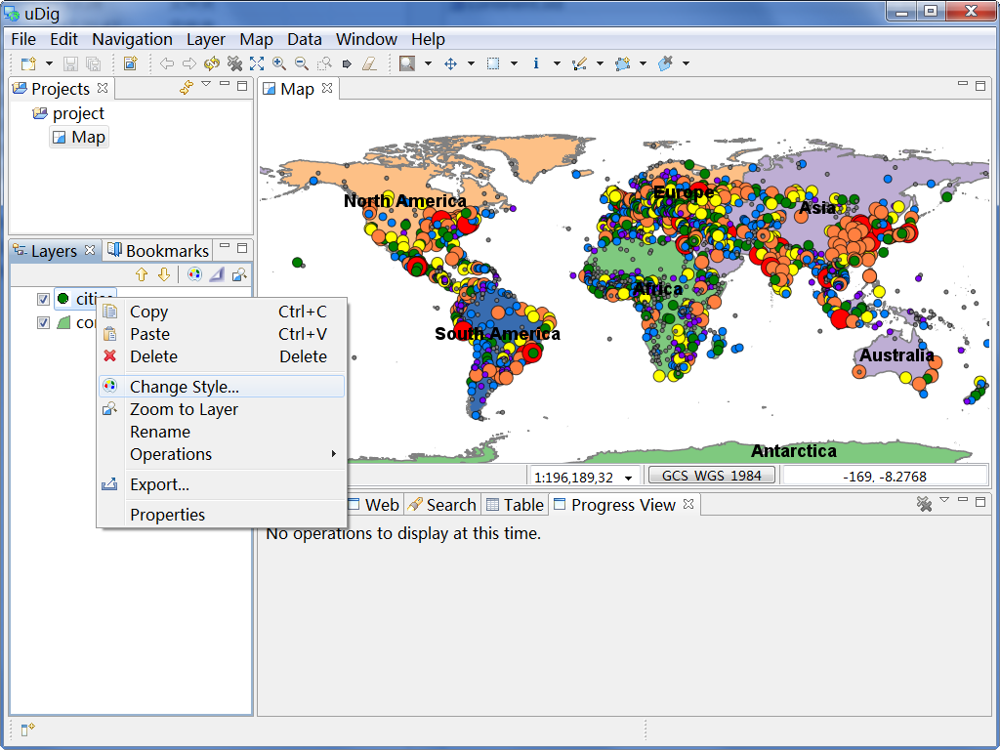
- 下面从uDig导出了SLD文件：
- 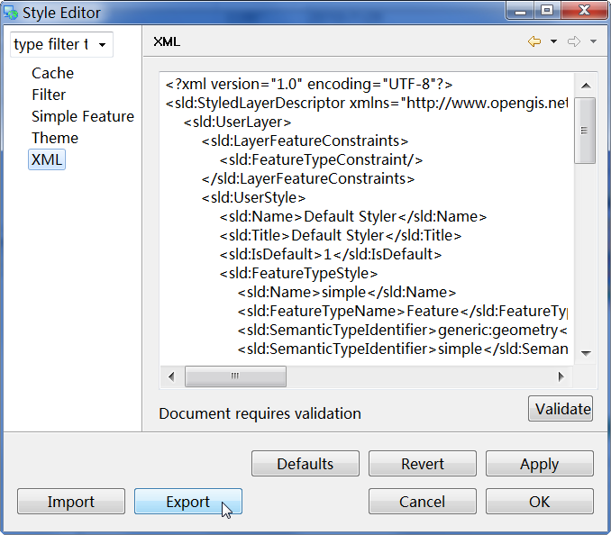
- 使用地图工具生成地图描述
- 在准备好数据和样式的基础上，我们可以将这些内容组织成地图，GIServer提供了一个简单的Map Tool工具可以完成这个工作。
- 首先，通过“New”工具可以选择一个地图目录，这里选择了上面的“world”文件夹：
- 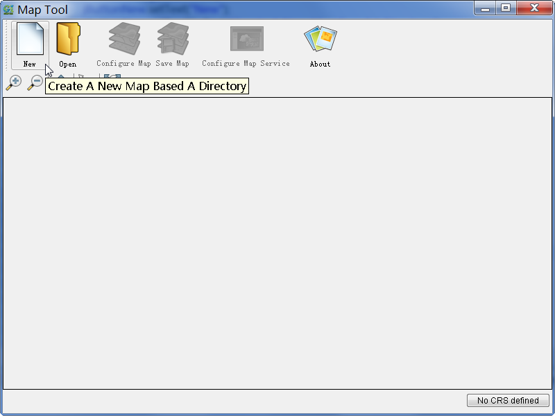
- 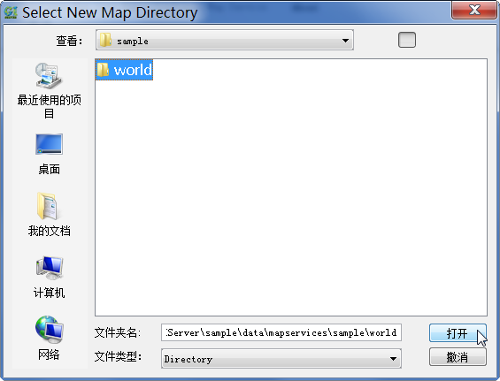
- 然后，我们需要把数据图层添加到地图中去，这可以通过“Configure Map”工具完成：
- 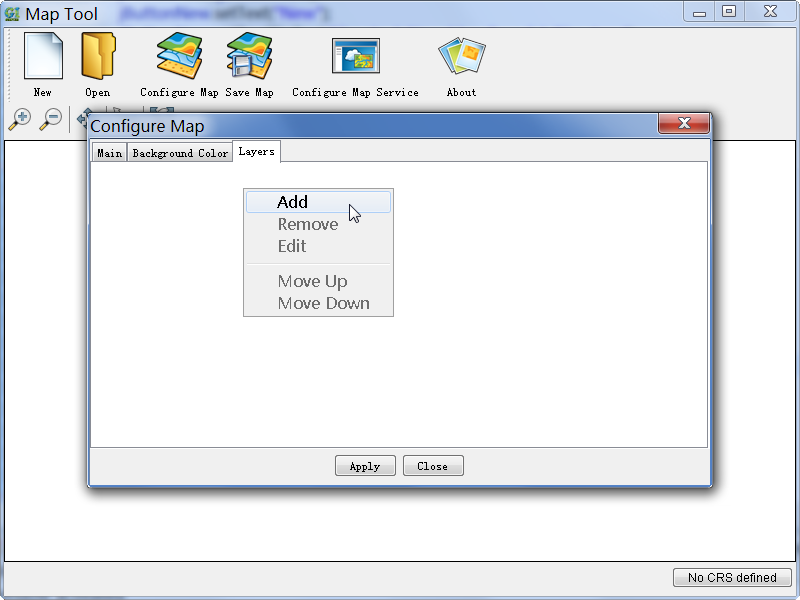
- 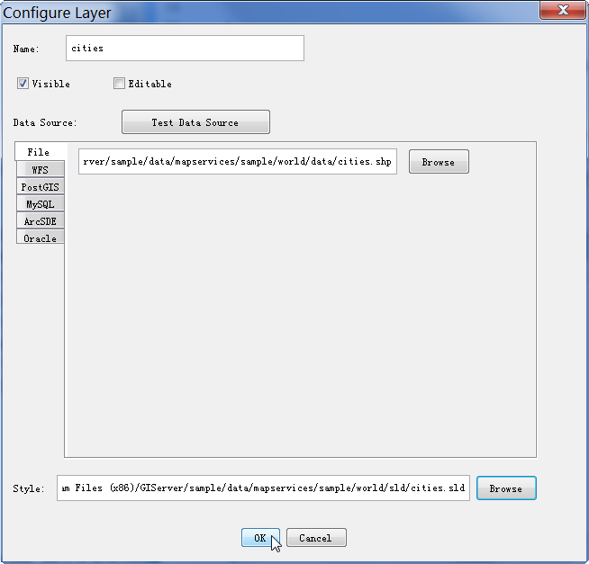
- 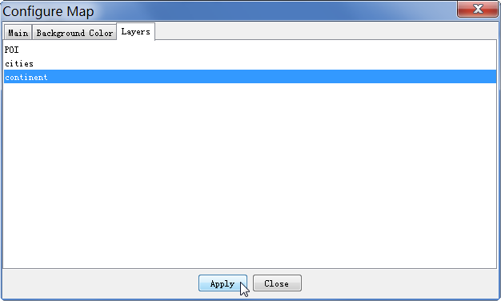
- 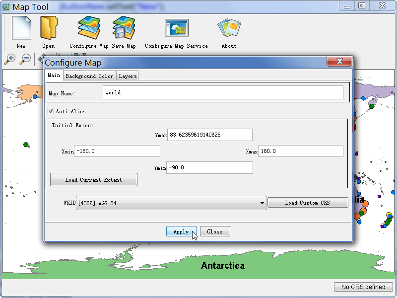
- 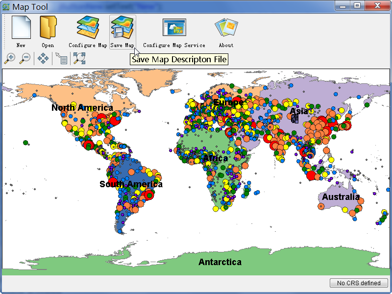
- 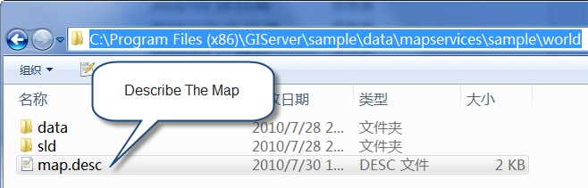
- 使用地图工具生成地图服务描述
- 在完成对地图的描述后，还需要对地图服务相关的参数进行描述，比如服务使用多少个实例、是否使用切片等。 这些功能都可以通过“Configure Map Service”工具完成：
- 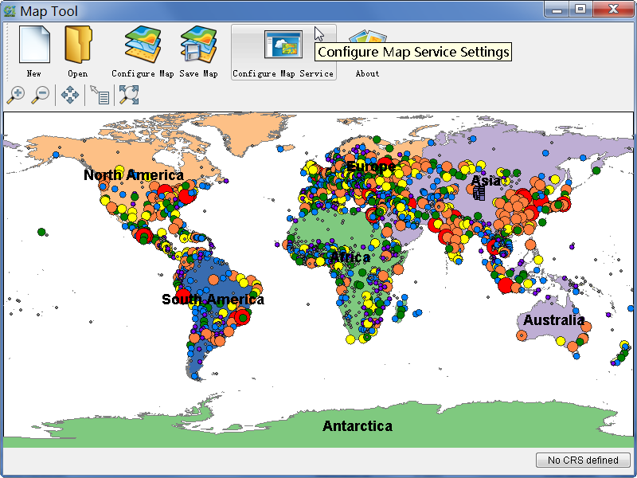
- 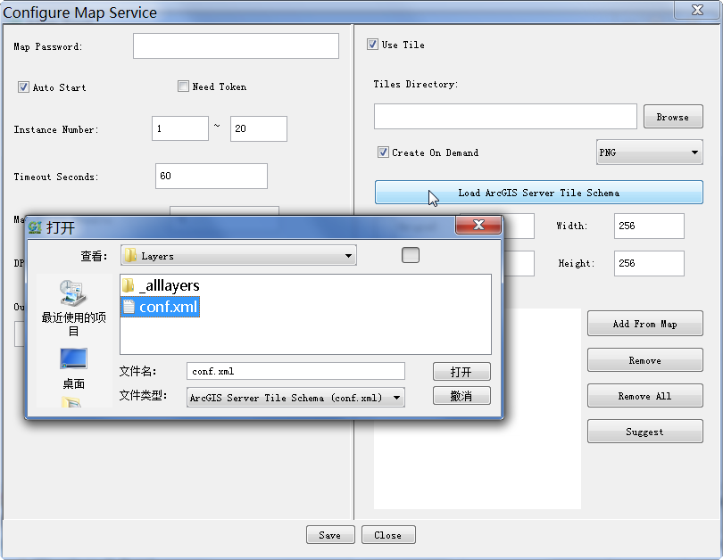
- 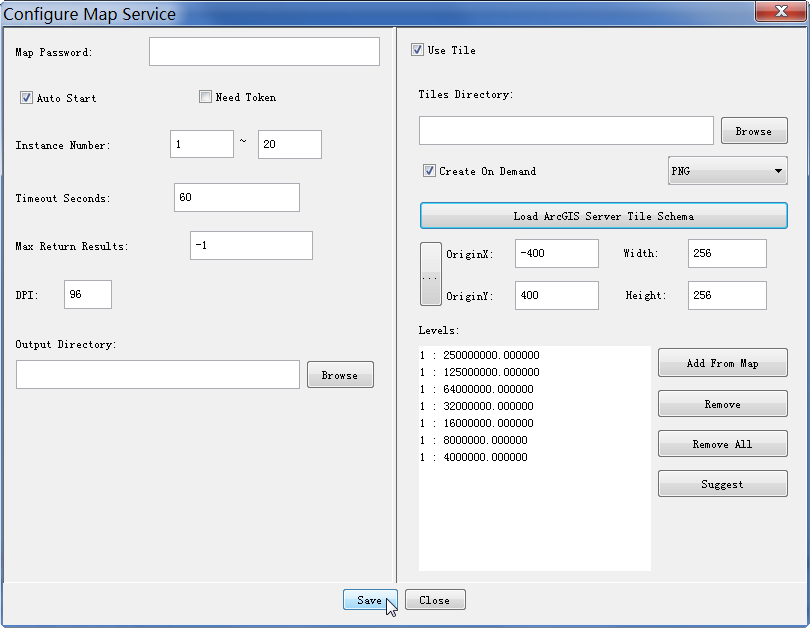
- 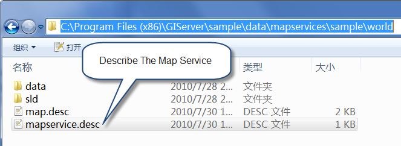
- 在管理员控制台中刷新地图服务

- 关于管理员控制台的详细介绍，可以参考这里。
- 使用切图工具生成切片
- 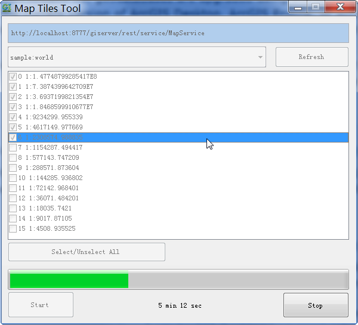
- 现在，GIServer还提供了一个简单的Map Tiles Tool工具可以帮助切图，注意，地图服务的Create On Demand属性需要为TRUE。